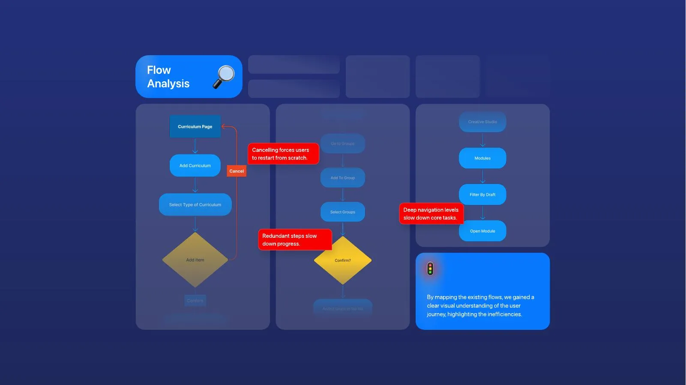
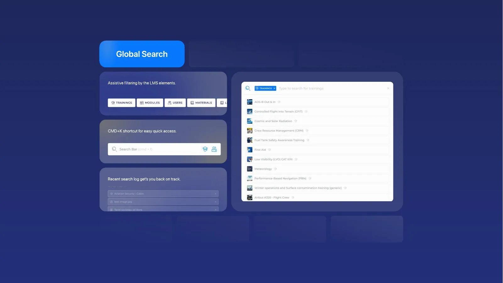
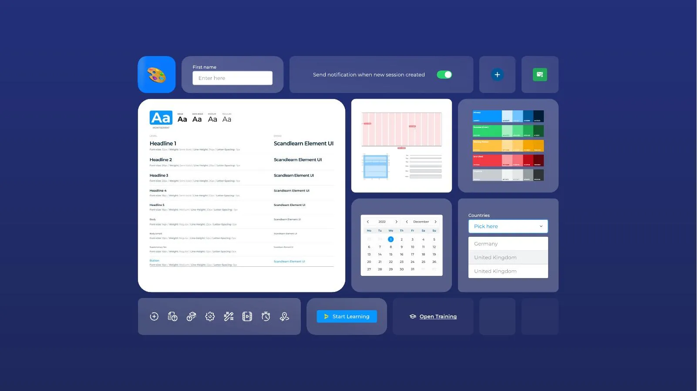

My part
I was the only designer: I ran the interviews and survey, mapped the old flows, rebuilt the sitemap, and designed the admin experience, search, course structure and component library. The Scandlearn team owned the product and built it.
The problem
Support was stretched thin because users couldn't find features. In interviews and a survey (about 30 replies), people called it "a frustrating maze". Mapping the flows showed why: cancelling meant starting over, navigation was deep, and steps repeated.

Navigation by role
Admins, authors, instructors and learners need different things. I rebuilt the sitemap so each role sees its own pages first, and designed the full-access admin experience.
Search as the main way around
More menus don't fix findability. One search covers trainings, modules, users and materials, with type filters, a ⌘K shortcut and recent searches.

A tree view and one component library
An expandable tree shows where you are in a deep course. A shared library of type, colours, inputs and tables with row actions kept 400+ screens consistent.

Outcome
- 400+ screens handed over to development.
- The client kept me on for 4 more months for a new website, video player and CBTA (competency-based training) feature.
I left before the build finished, so I have no usage numbers.
What I'd do differently
We had a baseline, the survey, but no plan to measure again. Next time I'd agree before handover to rerun it after launch.